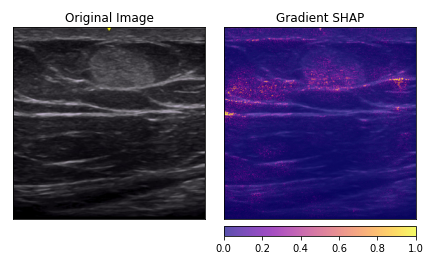

Data Science Techniques¶
Using the mappings provided, the team labelled positive and negative images into their respective categories. Efforts were made to crop the images to discard their borders and other annotated information, keeping only the core ultrasound image. The processed data consists of 263 images, a scarce yet fairly balanced dataset. The counts and proportion of positive and negative observations are shown in the table below.
Positive |
Negative |
|
|---|---|---|
Count |
135 |
128 |
Proportion |
51% |
49% |
To prepare the data for modeling, we performed various data augmentation techniques such as randomly flipping and/or rotating the images. We plan on further investigating data augmentation techniques such as contrast and brightness adjustment, scaling, and shifting.
Furthermore, we have created a Python script to split the data into train, validation, and test sets. This facilitates data reading into PyTorch and allows the team to have holdout samples to validate model results.
The pre-processed data is fed into a CNN architecture that utilizes the pre-trained model densemodels which was chosen based on its popularity in deep learning applications. Given our small dataset, we chose to use transfer learning to leverage a model that has already been trained on thousands of images. The densemodels CNN model will be used as our baseline.
The baseline model is trained on the pre-processed data, yielding a validation accuracy score of 82% after 20 epochs (i.e. 20 passes of the entire training dataset). We further explored the baseline model’s performance by examining the feature importances on several observations. Below is an example of a positive observation (i.e. lipohypertrophy present). The highlighted areas are areas that the model believes are significant for deriving the prediction. We can observe that the model is highlighting areas where lipohypertrophy is located.

To evaluate the CNN model’s performance, we will consider both accuracy and recall scores. Recall is an important metric from the healthcare providers’ perspective as administering insulin in a region that the model detected did not have lipohypertrophy when in fact there is lipohypertrophy present (i.e. false negatives) would be detrimental in managing diabetes.
Our review of the literature flagged other popular deep learning architectures that have been successful across a wide range of problems. As a second approach, we plan on utilizing the VGG architecture, proposed by Karen Simonyan and Andrew Zisserman in the paper “Very Deep Convolutional Networks for Large-Scale Image Recognition”. The VGG architecture has proven successful in applications with small images and combats the large memory requirement of the densemodels architecture. Our research also demonstrated that a VGG pre-trained CNN model is slow to train as its learned weights are rather large. Therefore, we plan on exploring Inception, proposed in the paper “Going Deeper with Convolutions” (Szegedy et. al, 2014). We plan on modeling the performance of a variety of tuned CNN architectures against the baseline model to determine the most appropriate architecture.